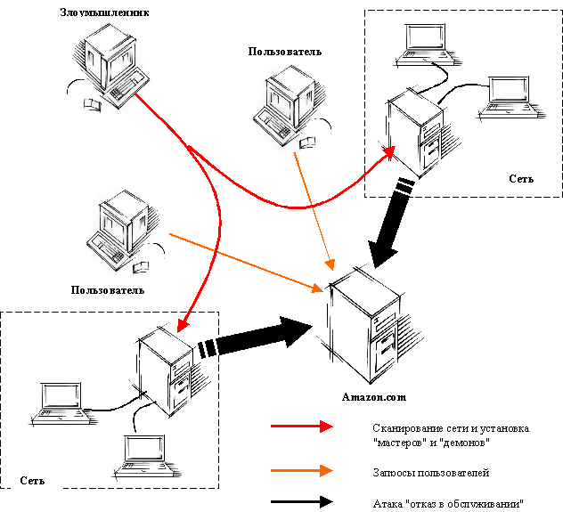

7 февраля в 10.20 утра по Тихоокеанскому времени пользователи портала Yahoo заметили существенное замедление в предоставляемых услугах - электронной почте, новостях и т.д. Пользователи, привыкшие к тому, что среднее время загрузки одной Web-страницы составляло не более 1.7 секунд были раздражены шестисекундными задержками. Дальше стало еще хуже. В 10.30 утра уже половина всех пользователей, пытавшихся получить доступ к серверу Yahoo в ответ получало только сообщение об ошибке. Анализ проблемы показал, что отказ серверов Yahoo вызван огромным числом небольших пакетов, которые изменялись от простых диагностических сообщений до запросов о получении HTML-страниц. Лавина этих пакетов обрушилась на Yahoo сразу из нескольких точек Internet. Специалисты Yahoo насчитали не менее 50 таких точек. В 11.00 утра менее 10 процентов всех пользователей Yahoo смогли получить доступ к ресурсам этого портала. И даже тем, кому все-таки удалось "достучаться" до сервера, приходилось ждать не менее 20 секунд пока придет ответ на сделанный запрос. В 13.15 все запросы пользователей были направлены на неатакованные сервера и в 15.00 функционирование Yahoo вернулось в нормальное русло [1].
Yahoo был первым из серии широко известных серверов, которые подверглись массированным атакам во вторую неделю февраля. Следующими жертвами стали сервера Buy.com (вторник, утро), eBay (вторник, вечер), CNN.com (вторник, вечер), Amazon.com (вторник, вечер), ZDNet.com (среда, утро), E*Trade (среда, утро), Datek (среда, утро), Excite (среда, утро). Время, в течение которого данные сервера были недоступны для пользователей, колебалось от 30 минут до нескольких часов.
Второй жертвой стал сервер Buy.com, который подвергся атаке в 10.50, во вторник. Шторм пакетов, направленный на этот узел в 8 раз превысил допустимый объем трафика и достиг отметки в 800 Мбит/сек [2]. Аналогичные результаты наблюдались и у других компаний. Все это стало возможным благодаря т.н. распределенным атакам типа "отказ в обслуживании" (Distributed Denial of Service Attacks, DdoS). Впервые о них заговорили еще в 1998 году, когда Naval Surface Warfare Center опубликовал отчет, посвященный анализу нескольких случаев применения распределенных атак. Второй раз пристальное внимание распределенным атакам было уделено в конце прошлого года. Было опубликовано несколько документов и предупреждений, в которых говорилось, что опасность применения таких атак очень велика. Однако практически никто не прислушался к этим заявлениям и в начале февраля грянул гром. Десятки компаний подверглись распределенным атакам, в т.ч. зафиксированы атаки и на российские компании, использующие Internet в своей работе. Детально, но не вдаваясь в технические подробности, рассмотрим технологию реализации таких атак.
Все они основаны на "классических" атаках типа "отказ в обслуживании" (Denial of Service), точнее на их подмножестве, известном как Flood- или Storm-атаки (указанные термины можно перевести как "шторм", "наводнение" или "лавина"). Смысл данных атак заключается в посылке большого количества пакетов на заданный узел сети (цель атаки), что может привести к выведению этого узла из строя, поскольку он "захлебнется" в лавине посылаемых пакетов и не сможет обрабатывать запросы авторизованных пользователей. По такому принципу работают атаки SYN-Flood, Smurf, UDP Flood, Targa3 и т.д. Однако в том случае, если пропускная способность канала до цели атаки превышает пропускную способность атакующего или целевой узел некорректно сконфигурирован, то к "успеху" такая атака не приведет. В случае же распределенной атаки ситуация коренным образом меняется. Атака происходит уже не из одной точки Internet, а сразу из нескольких, что приводит к резкому возрастанию трафика и выведению атакуемого узла из строя.
Реализуется распределенная атака в два этапа. Первый этап заключается в поиске в Internet узлов, которые можно было бы задействовать для реализации распределенной атаки. Чем больше будет найдено таких узлов, тем эффективнее будет атака. "Изюминка" в том, что в Internet таких узлов миллионы. Проводимые регулярно исследования показывают, что многие компании не следят за безопасностью своих узлов, имеющих выход в Internet. Эти-то узлы и становятся излюбленным местом злоумышленников, выбирающих их в качестве "базового лагеря" для дальнейшей атаки. Эти узлы могут относиться не только к сетям университетов и государственных структур, как это было в случае с февральскими атаками, но и Internet-провайдерам, финансовым и страховым компаниям и т.д. После нахождения уязвимых узлов, злоумышленник осуществляет установку на них компонентов, реализующих атаку. Такая установка становится возможной благодаря "слабым" местам, которые и использует злоумышленник для своих "черных дел".
Второй этап заключается в посылке большого числа пакетов на атакуемый узел. Особенность этого этапа в том, что посылка пакетов осуществляется не с узла, за которым "сидит" злоумышленник, а с скомпрометированной им системы, на которой установлены специальные агенты, реализующие распределенную атаку. Существует два типа таких агентов: "мастера" и "демоны" (или "клиенты" и "сервера"). Иногда компьютеры с установленными агентами называют компьютеры-"зомби". Злоумышленник управляет небольшим числом "мастеров", которые в свою очередь командуют "демонами". Казалось бы, что проблема не стоит и выеденного яйца. Вместо обычной одноуровневой структуры обычной атаки (злоумышленник -> атакуемый) используется трехуровневая структура (злоумышленник -> мастер -> демон -> атакуемый). Что мешает пройти по этой цепочке и определить все участвующие в атаке узлы? Но в том-то и состоит особенность распределенных атак, что так просто этого не сделать.
Обнаружение и блокирование одного или нескольких "мастеров" или "демонов" не приводит к окончанию действия атаки, поскольку каждый "демон" действует независимо от других и, получив соответствующие команды от "мастера", уже не нуждается в дальнейшем поддержании связи с ним. Т.е. "демон" работает автономно, что существенно затрудняет обнаружение и блокирование всех демонов, участвующих в распределенной атаке. Кроме того, при атаку возможна подмена адреса отправителя враждебных пакетов, что также отрицательно сказывается на эффективности контрмер. Злоумышленник использует десятки и сотни незащищенных узлов для координации нападения. Эти узлы могут принадлежать различным провайдерам и находиться в различных странах и даже на различных материках, что существенно затрудняет обнаружение злоумышленника, координирующего атаку. Каждый узел, участвующей в скоординированной атаке, не позволяет получить информацию о том, кто и откуда инициировал нападение. Кроме того, на этих узлах нет полного списка, участвующих в атаке, узлов. Поэтому выявление одного узла не приводит к превращению всей атаки.

В настоящий момент известно 4 основных инструмента реализации распределенных атак (Distributed Attack Tools) - trin00, Tribe Flood Network (TFN), Tribe Flood Network 2000 (TFN2K) и Stacheldraht.
Trin00
Trin00 - одна из первых распространенных распределенных атак типа "отказ в обслуживании". В качестве базы для атаки выбранной жертвы используются узлы под управлением операционных систем Linux и Solaris. Управление "демонами" осуществляется по протоколу TCP Взаимодействие между компонентами trin00 возможно только после предъявления соответствующего пароля, что не позволяет в случае обнаружения агента trin00 "перехватить" управление на себя или дать команду на прекращение атаки. Адреса отправителя пакетов trin00 не изменяются, что позволяет относительно легко обнаружить "демонов". Для атаки используется протокол UDP (атака UDP Bomb).
Tribe Flood Network (TFN)
TFN - второе известное средство для реализации распределенных атак. В отличие от trin00 оно использует протокол ICMP для управления своими компонентами. Спектр реализуемых атак Denial of Service в TFN шире, чем в trin00. Это и SYN Flood, и UDP Bomb, и ICMP Flood и, наконец, Smurf. Для затруднения обнаружения источников атаки адреса "демонов" могут быть изменены. Компоненты TFN работают под управлением ОС Linux и Solaris.
Tribe Flood Network 2000 (TFN2K)
TFN2K - это "продвинутая" версия TFN, которая появилась в декабре прошлого года. В отличие от своего прототипа, она использует алгоритм CAST-256 для шифрования управляющих команд между всеми своими компонентами. Для управления могут использоваться протоколы TCP, UDP или ICMP. Для введения в заблуждение TFN2K может создавать пакеты, направленные не на цель атаки (т.е. "decoy packets"). Компоненты TFN2K работают под управлением ОС Linux, Solaris и Windows NT [3]
Stacheldraht
Stacheldraht - это средство, объединяющее в себе возможности TFN и trin00. Для управления "мастерами" используется протокол TCP, а для управления "демонами" - TCP или ICMP. Основные отличия stacheldraht от своих "коллег" в возможности удаленного обновления своих компонент более новыми версиями и в возможности обнаружения фильтрации согласно RFC 2267, затрудняющей подмену адресов сетевых пакетов. Для шифрования управляющих команд используется протокол Blowfish. Компоненты stacheldraht работают под управлением ОС Linux и Solaris.
Различные фирмы, работающие на ниве безопасности выпускают обновления своих продуктов, предназначенные для обнаружения таких атак. Одной из таких фирм была Internet Security Systems, Inc. (http://www.iss.net), которые обновила сразу все семейство своих продуктов SAFEsuite, состоящее из системы обнаружения атак RealSecure, систем анализа защищенности Internet Scanner, System Scanner и Database Scanner, а также системы поддержки принятия решений в области безопасности SAFEsuite Decisions. Фирма Internet Security Systems выпустила обновления своих продуктов еще в декабре 1999 года, за 2 месяца до нашумевших атак на Amazon.com, Buy.com и других.
Однако еще до приобретения специализированных защитных средств можно реализовать ряд мер, которые помогут предотвратить или снизить ущерб от распределенных атак [4]. Во-первых, обновите все свое программное обеспечение, установив Service Pack'и, patch'и и hotfix'ы. Эта достаточно простая мера не позволит злоумышленникам установить на ваши узлы "демоны" и "мастера", используя уязвимости вашего программного обеспечения.
К другим мерам защитным
мерам можно отнести:
1.
Определите персонал, который будет
отвечать или с которым необходимо
связаться в случае обнаружения
распределенной атаки или в случае
подозрения, что ваша система
скомпрометирована и может содержать
"мастера" иди "демона". В качестве такого
персонала могут выступать сотрудники
отдела защиты информации, отдела
автоматизации или ваш Internet-провайдер.
2. Знакомьтесь с регулярно
публикуемыми бюллетенями, выпускаемыми
организациями, работающими в области
информационной безопасности (например, ISS
Security Alert). Это позволит вам быть в курсе
новых уязвимостей и методов действия
злоумышленников. Для облегчения поиска
уязвимостей в вашей сети используйте
автоматизированные средства анализа
защищенности, например, системы Internet Scanner и
System Scanner компании Internet Security Systems. Эти
системы позволяют обнаружить более 1200
различных уязвимостей, в т.ч. и приводящих к
реализации распределенных атак.
3. Своевременно устраняйте
уязвимости в программном обеспечении,
используемом в вашей сети. Это позволит вам
снизить риск компрометации ваших систем и
не позволит злоумышленникам установить на
ваши узлы "мастера" или "демонов" для
реализации распределенных атак.
4. Для идентификации распределенных
атак на ваши системы, а также для
идентификации "мастеров" и "демонов",
установленных в вашей сети, используйте
средства обнаружения атак и анализа
защищенности. Например, систему RealSecure и уже
названную систему Internet Scanner компании Internet
Security Systems.
5. Используйте
межсетевые экраны и защитные механизмы
маршрутизаторов и другого сетевого
оборудования. Если это и не поможет
обнаружить источник распределенной атаки,
то поможет обнаружить сам факт ее
реализации и своевременно среагировать на
нее.
6. Используйте средства
балансировки нагрузки и управления
пропускной способностью сетевого трафика.
7. Рассматривайте и
своевременно реагируйте на сообщения
ваших пользователей о подозрительных
событиях в системе.
8.
Разработайте план обеспечения непрерывной
работы и восстановления, который позволит
в случае нарушения функционирования ваших
систем вследствие реализации
распределенных атак быстро вернуться к
нормальной работе.
9. По
возможности создайте резервный канал
доступа в Internet. В случае нарушения
функционирования вашего основного канала,
этот канал позволит быстро переключится на
резервный, не нарушив принятую технологию
обработки информации.
10.
Обучите ваш персонал в специализированных
организациях, занимающихся повышением
квалификации в области сетевой
безопасности. В России такой организацией
можно назвать авторизованный учебный
центр (Authorized Training Center, ATC) компании Internet Security
Systems, организованный при НИП "Информзащита".
[1] J. Sandberg, T. Hayden, G. Vistica, D.
Lorch. Hunting the Hackers. Netweek, February 21, 2000
[2] А. Лукацкий. Анатомия
распределенной атаки. PCWeek/RE, №5, 2000
[3] ISS Security Alert. Denial of Service Attack using the TFN2K
and Stacheldraht programs. February 9, 2000
[4]
Results of the Distributed-Systems Intruder Tools Workshop. CERT® Coordination
Center. Software Engineering Institute. Carnegie Mellon University. December 7,
1999.